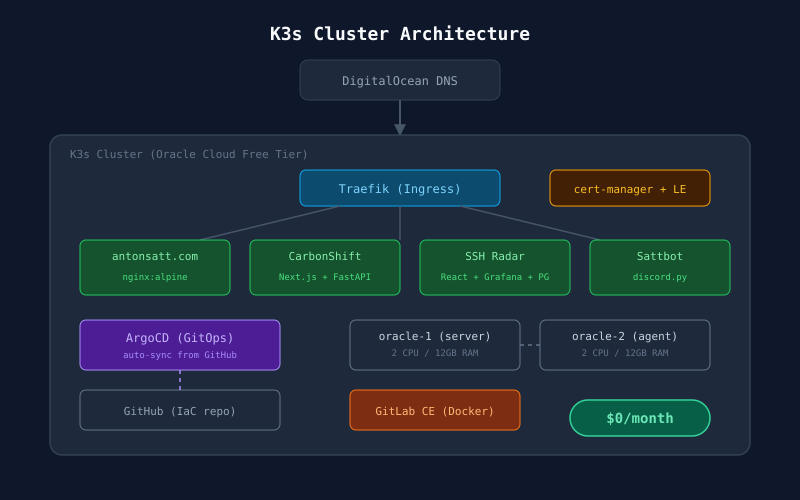

K3s Kubernetes Cluster
with GitOps & Zero Cost
Consolidated 7 scattered servers into a production-grade Kubernetes cluster running on Oracle Cloud's free tier. Fully automated deployments with ArgoCD, automatic SSL, and Infrastructure as Code with Ansible. Monthly cost: $0.

The Problem
I had 7 different servers spread across DigitalOcean, Oracle Cloud, AWS, a Raspberry Pi, and a homelab — each configured manually with no standardization. Websites ran via PM2 and nginx, a Discord bot ran as a systemd service, and a Bitcoin payment server ate 40GB of disk space. No backups. No orchestration. If any server died, I'd have to rebuild from memory.
"I'm a DevOps student — my own infrastructure should reflect what I'm learning. Kubernetes, GitOps, Infrastructure as Code. Not scattered VMs with manual nginx configs."
The Solution
Consolidated everything into a 2-node K3s Kubernetes cluster on Oracle Cloud's always-free ARM64 VMs (24GB RAM total), with a full GitOps pipeline.
How Deployments Work
Push to GitHub
Edit a Kubernetes manifest in the IaC repository and push. That's the only manual step.
ArgoCD detects the change
ArgoCD polls the GitHub repo every 3 minutes. When it sees a diff, it calculates what needs to change on the cluster.
Kubernetes applies the update
ArgoCD runs kubectl apply automatically. Old pods are replaced with new ones via rolling updates — zero downtime.
Traefik routes traffic, cert-manager handles SSL
Traefik reads Ingress rules and routes requests by hostname. cert-manager automatically issues and renews Let's Encrypt certificates.
Self-healing
If a pod crashes, Kubernetes restarts it. If someone manually changes something on the cluster, ArgoCD reverts it to match git. Git is the single source of truth.
What's Running
antonsatt.com
nginx:alpinePortfolio site. Static HTML served by nginx. Auto-deployed via GitHub Actions on every push.
CarbonShift
Next.js + FastAPICO2 emissions tracker with AI-powered reports via OpenRouter. Frontend and backend run as separate deployments.
SSH Radar
React + Grafana + PostgreSQLReal-time SSH attack monitoring with 280,000+ recorded login attempts. Grafana dashboards with world map visualization.
GitLab CE
Docker (proxied via K3s)Self-hosted GitLab instance for private repositories. Runs in Docker, proxied through K3s Traefik ingress with auto-SSL.
Sattbot
Python + discord.pyCustom Discord bot with moderation, RSS feeds, and fun commands. Runs as a headless pod with no web UI.
Infrastructure Layers
Layer 1: Server Provisioning (Ansible)
Ansible playbooks handle SSH hardening, fail2ban, Docker, and iptables configuration. If a server dies, one command rebuilds it: ansible-playbook site.yml
Layer 2: Container Orchestration (K3s)
K3s is a lightweight, production-grade Kubernetes distribution. Two ARM64 nodes connected via VXLAN overlay network. Comes with Traefik for ingress and CoreDNS for service discovery.
Layer 3: GitOps (ArgoCD)
ArgoCD watches the GitHub repository and automatically syncs Kubernetes manifests to the cluster. Every change is tracked in git history. Self-healing ensures the cluster always matches the desired state.
Layer 4: SSL (cert-manager + Let's Encrypt)
Fully automated certificate lifecycle. Add an annotation to an Ingress resource and cert-manager handles issuance, validation, and renewal. Zero manual certificate management.
Key Decisions
Monthly infrastructure cost
Oracle Cloud Always Free tier provides 2 ARM64 VMs with 12GB RAM each — enough for all services with room to grow.
Servers consolidated
From 7 manually configured servers across 4 providers down to 2 nodes in a single K3s cluster with full IaC.
Manual deployment steps
Push to git and ArgoCD handles the rest. GitHub Actions builds container images on push for the portfolio site.
Tech Stack
Project Details
Type
Infrastructure / Kubernetes / GitOps
Status
Live & Running
Monthly Cost
$0 (Oracle Cloud Free Tier)
Compute
2x ARM64 VMs (4 CPU, 24GB RAM total)
Services Hosted
6 apps + ArgoCD + cert-manager